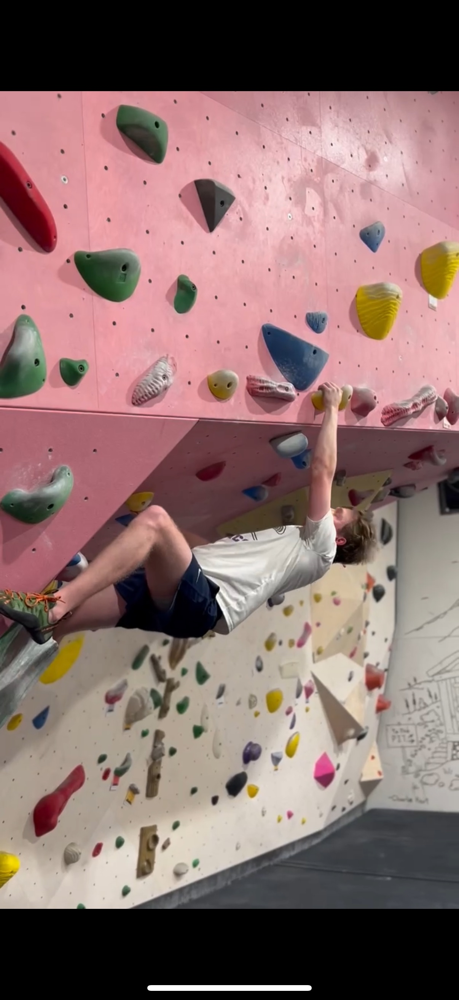
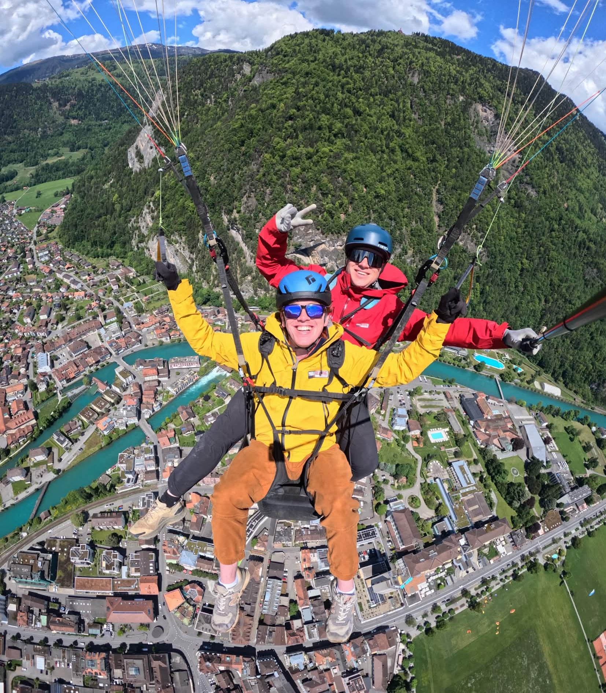
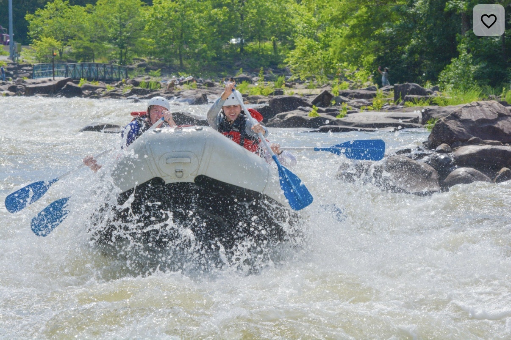
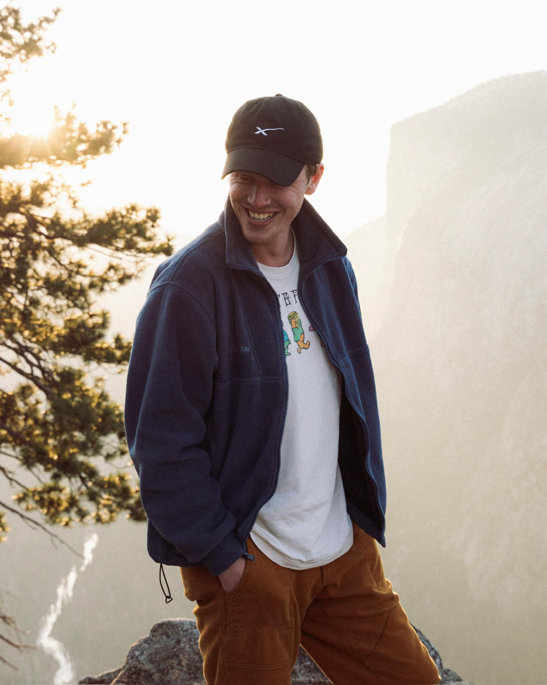
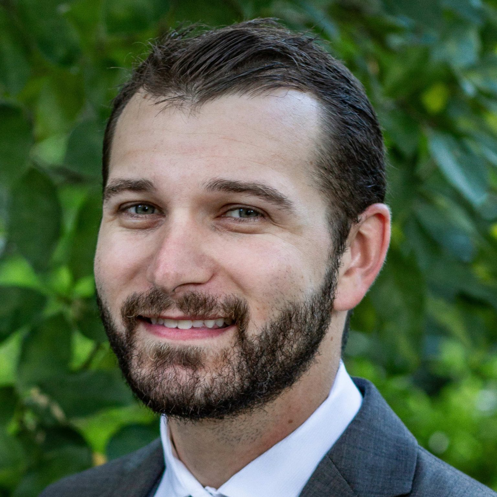
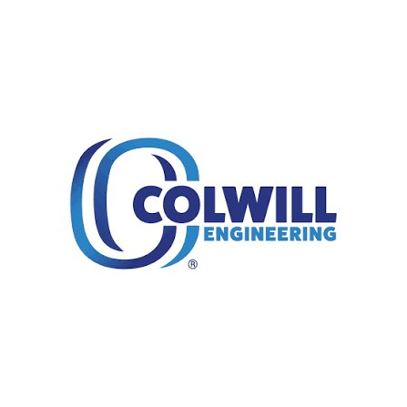

ENGINEERING THE UNKNOWN.
I solve complex problems through rapid prototyping, systems thinking, and failure analysis. I don't just build; I explore the boundaries of what's possible.

About Me
I am an engineer driven by the desire to identify problems before they identify us. My background spans mechanical and electrical disciplines, focused on rapid prototyping and failure analysis. I challenge assumptions because that’s where the most interesting problems usually are.
At my core, I am a leader who dives into the unknown. Whether I'm scaling a climbing wall, calculating odds at a poker table, or designing an engineering system, I apply the same strategic rigor and appetite for challenge.
- Systems Engineering
- Rapid Prototyping
- Failure analysis
- problem identification
- Project Management
- Concept-to-Execution
- Technical Team Lead
- Failure Risk Assessment
Technical Work
A selection of projects focusing on high-stakes prototyping and systematic problem solving.

Automated percolation tester
Was the extreme owner of the development of an automated percolation testing system. This system measures soil drainage characteristics using integrated sensors, actuators, and microcontroller-based control. Through analysis of existing tests, it was determined that existing methods had wild inconsistencies leading to failures of drainage and water management systems. The Automated Percolation Tester improves consistency, reduces manual effort, and enables more precise data collection. As of last update, it has been deployed in five countries.

mechanical inerter for satellite robotic arms
Developed a mechanical inerter concept intended to manage dynamic forces in mechanical systems. The design was focused around reducing impulses from robotic arm operations on satellites. The project involved modeling system behavior, exploring physical implementations, and prototyping components to study impulse and vibration mitigation

RV explosion
Conducted a root cause investigation of a catastrophic RV explosion that resulted in injuries to three individuals. The analysis involved developing preliminary failure hypotheses prior to a site visit, documenting potential failure modes during the field inspection, and performing material analysis to identify the underlying failure mechanisms. The investigation determined that a propane line had sustained mechanical damage prior to the incident, allowing propane to accumulate inside the RV. When the burner was later activated, the accumulated propane ignited, resulting in the explosion.
Spirit of Innovation
Pursuing new ideas and turning them into practical systems through experimentation and creative problem solving.
I am driven by curiosity and a desire to explore new ideas through experimentation and hands-on engineering. I enjoy taking early concepts, testing them through rapid prototyping, and refining them into practical systems. Whether developing new technologies, investigating unconventional mechanical concepts, or helping teams shape emerging ideas as an innovation mentor, I am motivated by the challenge of turning curiosity and creativity into tangible engineering solutions. (UFish; Automated Percolation Tester; Mechanical Inerter; Voice Controlled Drone)
GIving back
Building strong communities through investment, mentorship, and collaboration.
I believe that engineering and leadership come with a responsibility to support and uplift others. Whether mentoring teams, contributing to community initiatives, or helping peers work through challenging problems, I enjoy creating opportunities for others to grow and succeed. For me, giving back means sharing knowledge, encouraging curiosity, and helping build communities where people can learn, collaborate, and push each other to do their best work. (Engage Florida; Socks Sacks and Supper; Innovation Mentor)
Strategic Initiative
My mission is to explore the unknown, build meaningful systems, and help others grow along the way. I am driven by curiosity and a desire to understand how the world works, especially in complex environments where new ideas and technologies can expand what we are capable of achieving. Through engineering, leadership, and collaboration, I aim to take on challenging problems, develop practical solutions, and create opportunities for others to learn, contribute, and succeed. Ultimately, I want my work to push boundaries, deepen understanding, and leave the people, teams and communities around me stronger than I found them.
Non-Linear Exploration




Technical Expertise
Core methodologies and leadership frameworks applied across complex project lifecycles.
Systems Thinking
Understanding how complex components interact to form reliable systems. I approach engineering problems by considering the entire system, rather than optimizing individual components in isolation. Familiarity stems from mechanical components, electronics, sensors, software, and data analysis.
Case Studies:
- UFish: Designed an integrated sensing platform combining imaging, environmental data collection, and remote data transmission.
- Auto Percolation Tester: Coordinating sensors, valves, and control logic for automated testing.
Additional: Mechanical Inerter; Auto Sampler; Voice Controlled Drone
Rapid Prototyping
Turning ideas into working systems through iterative design. I enjoy moving from concept to physical prototype quickly, using rapid cycles to uncover constraints and improve solutions.
Implementations:
- Voice Controlled Drone: Built a prototype that translated voice commands into drone control inputs.
- Mechanical Inerter: Exploring impulse-mitigation mechanisms through modeling and prototyping.
- UFish: Reverse-engineered an off-the-shelf underwater drone and integrated a custom ESP32 control system to rapidly prototype new sensing and control capabilities for autonomous marine applications.
Problem Discovery
Identifying the real challenge before designing the solution. I focus on diagnosing root causes and stakeholder constraints before building anything.
Discovery Phases:
- UFish: Conducted customer interviews to identify gaps in modern fishing and marine conservation methods.
- Engage Florida: Started a non-profit aimed at delivering help where it was actually needed, not where we saw it. Conducted numerous stakeholder interviews to identify major pain points and create action.
Failure Analysis
Failures are data. I analyze why systems break and where assumptions fail to improve design robustness and prevent future recurrence.
Technical Investigations:
- EEE5480 Research: Studied advanced failure analysis methods used in microelectronics inspection.
- Quality Forensic Engineering: Investigated material defects, manufacturing flaws, and system failures using analytical and inspection techniques to determine root causes and improve design reliability.
- Hardware Prototype Diagnostics: Iteratively diagnose design issues in embedded systems and mechanical prototypes. (Automated Percolation Tester; Voice Controlled Drone)
Exploration Driven Engineering
I am drawn to problems that require stepping into the unknown. I have spent time developing new sensing systems, exploring unconventional solutions, or applying engineering tools to environments like oceans, autonomous systems, and emerging technologies. My approach combines curiosity with practical prototyping to turn exploration into tangible systems.
Integration Work:
- UFish: Developing deployable sensing platforms to monitor environmental conditions.
- Mechanical Interter: Investigating new ways to manage dynamic forces through novel mechanical designs.
Team Builder
Creating environments where people and ideas move further together. I focus on open problem-solving and maintaining momentum during high-stakes challenges.
Leadership Examples:
- UFish: Founded and organized a multidisciplinary engineering team to explore ocean sensing technologies. Coordinated project direction, created an environment where team members could contribute ideas, experiment with solutions, and iterate quickly.
- Community Leadership (Engage Florida; Socks Sacks & Supper): Contributed to nonprofit and student initiatives focused on mentorship and community building. Worked with teams to organize events, support members, and create opportunities that helped others grow academically and professionally.
- Innovation Mentor: Served as an innovation mentor by helping teams structure ideas, refine technical concepts, and move from early brainstorming toward practical solutions. Focused on guiding teams through problem discovery, encouraging experimentation, and creating an environment where creative ideas could be tested and developed collaboratively.
Recommendations
Verified testimonials and documentation from technical leads regarding systems execution and engineering leadership.
The UFish team has remained committed to solving the underlying problem rather than defending an initial solution. They have demonstrated resilience in refining scope, intellectual honesty in reassessing assumptions, and responsiveness to feedback. They are hard-working, driven, and coachable, qualities that consistently distinguish founders capable of advancing through early-stage uncertainty.
Dr. Melissa White
Associate professor // University of florida engineering innovation institute
Mr. Foster began his internship with no specific forensic engineering experience, and he quickly picked up on the procedures and responsibilities of a forensic engineer. Mr. Foster exhibited great project management skills, task management skills, self-motivation, and an outstanding understanding of the principles of engineering and physics.

Sean Vozza
Sr. engineer // quality forensice engineering
Hayden entered our working environment having little knowledge or experience in our field. Immediately, Hayden demonstrated keen interest in learning not only the software systems we use but also the engineering principles associated with producing our designs... He was truly engaged in our work during his short time in our employ.

Phil Cochran
Vice president // colwill engineering